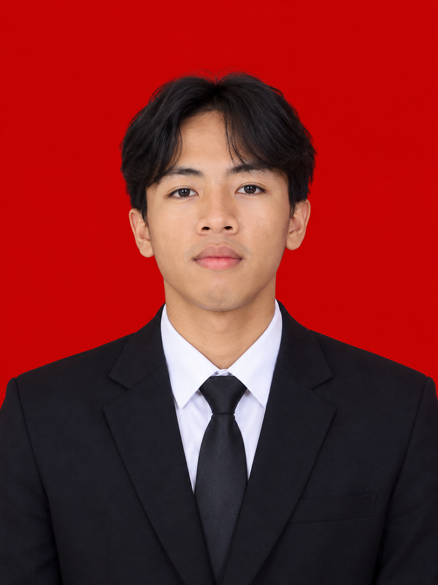

HALO, SELAMAT DATANG!
Selamat datang di website portofolio pribadi saya. Website ini berisi profil, pendidikan, cita-cita, dan pandangan hidup saya.
Tentang Saya
KENALI SAYA
Perkenalkan, Nama saya M.Teguh Aprianto. Saya berasal dari bengkulu yang terletak di pulau sumatra,sekarang saya sedang berkuliah di stimik el rahma di bidang sistem informasi, yang memiliki semangat tinggi untuk belajar dan mengembangkan kemampuan diri. Saya tertarik pada teknologi, komputer, dan pengembangan website.
Saya percaya bahwa kerja keras,tidak menghianati hasil insyaallah
RIWAYAT BELAJAR
| No. | Jenjang | Nama Sekolah | Keterangan |
|---|---|---|---|
| 1 | SD | Negeri 28 Kaur | Lulus |
| 2 | SMP | SMP 35 Berasrama Kaur | Lulus |
| 3 | SMA/SMK | SMA 3 PAKEM | Lulus |
| 4 | Kuliah | STIMIK EL RAHMA YOGYAKARTA | Mahasiswa |
IMPIAN MASA DEPAN
Cita-cita saya adalah membahagiakan kedua orang tua, dengan cara menjadi seorang profesional di bidang teknologi informasi yang mampu menciptakan karya digital bermanfaat. Saya akan terus belajar, berlatih, dan mengembangkan keterampilan untuk mencapai cita-cita tersebut.
PRINSIP KEHIDUPAN
"Jangan takut gagal, karena setiap kegagalan adalah kesempatan untuk belajar dan menjadi lebih baik."
Bagi saya, hidup adalah perjalanan untuk terus belajar dan memperbaiki diri. Saya percaya bahwa kesuksesan membutuhkan usaha, doa, kedisiplinan, kejujuran, dan tanggung jawab. Saya ingin menjadi pribadi yang bermanfaat bagi keluarga dan masyarakat.
MARI TERHUBUNG
Kunjungi media sosial saya melalui tautan berikut.